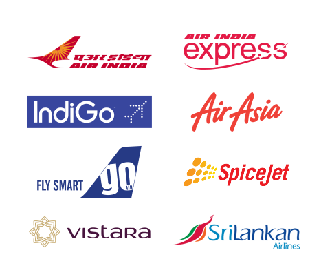

An airline is a company that provides air transport services for traveling passengers and/or freight. Airlines use aircraft to supply these services and may form partnerships or alliances with other airlines for codeshare agreements, in which they both offer and operate the same flight.
